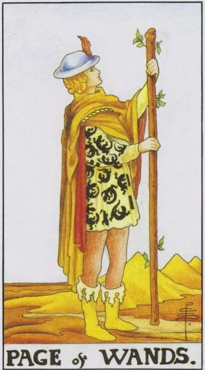

Minor Arcana · Wands
XIPage of Wands
The Young Herald of Fire: the thirst for discovery, fresh ideas and the energy of a beginner for whom the world has not yet been solved.
Archetype and core meaning
Page looks at the green sprouts on the top of the staff, as if he had discovered for the first time that the tree was alive, behind the hills, on the belt of the helmet, he's ready to hike tomorrow, that spirit of the pioneering disciple: little knowledge, curiosity for ten, and every day promises discovery.
The card describes the energy of beginning without the burden of expertise: try, ask, run, find out. The strength of Page is precisely that he is not afraid to know anything. In the layouts, he often brings news about a new business — a letter, a call, a proposal that will pinch in his chest, and points to a young man full of fire.
Daily life
A day of surprises of good tone: a surprise message, an invitation, an idea of why not. I want to move -- a new route of walking, a master class, a disassembled pantry with a forgotten find. Good time to play with children: the younger ones today say the most interesting things.
Work and career
Fresh wind: the intern offers a good idea, you are assigned a new direction, you get an invitation to study or an internship, the card is favorable for mastering the profession from scratch and the first public steps. Don't demand from the stage of status - his currency of experience and connections; the courage of stupid questions is more expensive than the sight of an all-knowing expert.
Relationships
The novel begins as an adventure: lightness, laughter, walking until the morning and no scripts. The page brings literal news — a message from a person from the past or the first "hello" from a new one. The card advises couples the language of the pioneers: an unusual date, a tent overnight, a joint adventure.
Health
The tone is young regardless of passport: the body responds to games, not coercion. The best recipes of the day are bicycle, trampoline, dancing, any activity for pleasure. Emotional lifting itself improves sleep and appetite. The enthusiasm of the beginner is prone to overload — add loads gradually.
Spiritual meaning
A student who has begun to dream prophetic dreams: first self-contact with the subtle world, pure and strong, not yet touched by patterns. The card is favorable for starting learning, first practice with a new tool, travel of strength. The holy impudence of questions opens doors that solidity bypasses.
A spark without a wick: ideas fade and fade, words outpace deeds, and anxiety poses as enthusiasm.
Archetype and core meaning
The beginner who stays at the beginning: a hundred courses without one completed, a thousand promises without being fulfilled, his fire goes to spectacular declarations, not to deeds, sometimes it is just age and inexperience, sometimes infantilism, conveniently hiding behind charm for years.
The second side is the distorted news: rumors, gossip, misread messages; double-check the news when the Page is upside down. The third is the silenced inner child: the person has forgotten what it is to play and want, and envys the ease of others under the guise of fatigue. The card calls not to rigor, but to honesty: what do you really want?
Daily life
The day is full: ten things started, zero done, the phone eats up the evening, promises are made faster than execution, there may be annoying news — transfer, cancellation, gossip in a chat room. The salvation is simple: one screen, one task, an hour of concentration. In the evening, do something uselessly joyful to hear yourself.
Work and career
Childhood growth sickness: a coworker promises more than he does; you grab everything and break short deadlines, dampening your reputation; news that comes may change plans — check the source before you react. Pick one skill and bring it to the level of "skill": reliability is older than the certificate collection.
Relationships
The fun-easy-to-take-responsibility phase is where the partner evades definitions, flirts with correspondence, disappears and returns with flowers, or is it you who hide behind jokes from the depths, sometimes the card warns of rumors affecting the couple, do you need a companion or an audience?
Health
Uneven rhythms can get you into trouble: hyperactivity until midnight, apathy before lunch, food on the run, sleep in snails. Childhood illnesses can remind you of themselves as adults. Return regimen as a form of care, not punishment: the same time of rising, eating at the table, walking without headphones.
Spiritual meaning
A young spirit playing with fire is not by the rules: practices are started and abandoned, tools are bought and forgotten, knowledge is told by ear. A card warns of spiritual chatter and your own spiritual shopping. Go back to the first practice and finish it: depth is always more modest than collection.
🌿 How the school reads this rank
The main idea
The person depends on his own passions, but so far he is included in someone else's desire system: he wants payment, the boss wants a job, and you have to consider both sides.
How it manifests
In work, an energetic beginner who is ready to take on tasks and show himself; in a relationship, a strong passion, but not yet a little autonomy; in development, waiting for the moment when there is a right to act more freely.
The shadow side
The desires do not match the requirements of the situation, but the person continues to obey.
Keywords
Beginner · passion · performer · probation · adjustment
📜 In detail — from the rank lecture
Essence of the card
The man is dependent on his own passions, which are included in social exchange: the boss wants a job, you want payment, there is a “wish struggle” and not a bare order.
Upright position
- Work: the right newcomer willingly takes everything and says, "Look how good I am"; initiating early, waiting for someone to be judged and allowed to grow to a knight; Example: Friday's call from the boss to go to the night shift - refusal risks dismissal, and "the right page needs to listen and go out."
- Relationship: a boiling passion. The right girl "shouldn't offer to a man" - she adjusts her desire to his ("call to the movie - okay, come on").
Negative meaning
• The desires do not coincide, but still obeys; the “ochlomon”, whom mom and dad hired for work, pulls to play computers, works crookedly, does not understand what they want from him.
School emphases and distinctive points
- One scene is laid out in all four suits: the girl whistles after - the habit of not turning around (pentacles), the impulse to snap (wands), the calculation of "trolling" and ignoring a strong person (swords), emotional anticipation (cups); "you turn around - means page".
- He illustrates the hierarchy of the court with one plot: the son does not get on the plane because of the weather - the page sits at the airport and waits, the knight changes the ticket, the queen chooses the transport herself, the king would fly in a private jet.
- The teacher is smeared in the elements: information is swords, the skill is “driven into habit” – earth, socialization (“school is primarily a treasure trove of communication”) – wands, love and humanities – cups; class favorites – queens.
- The medieval gender framework is openly stated: tarot is a “slice of medieval society”, women are traditionally put in the place of the page – the first to not show initiative.
- Customer Reception: always add “but it’s inaccurate – cards work differently for different people, check on yourself first.”
- Modern images: the film "Terminal" - a clean page (stuck at the airport, limited in everything); about Gagarin - "the party said it was necessary, the Komsomol answered to eat" - like an inverted page of pentacles, physically fixed.
- Astrology (Zodiac, planet) and Slavic series at the lecture is not at all; outside the masty bindings only temperaments and comparison with Gemini.
- Pregnancy is played by pages as an extreme dependence on the situation; alcohol and drug addiction are “also pages”, each has a dependence in his element.
- If page drops when contracting, it is pointless to advise “learning”: the page has no choice – to be the perfect performer.
- Take only visually pleasing deck; the course deck is intentionally neutral, and the Manara with naked bodies will cause rejection and will not work.
Keywords
Dependent on passions; probation; adjustment to someone else's desire; "ohlamon" (translation).